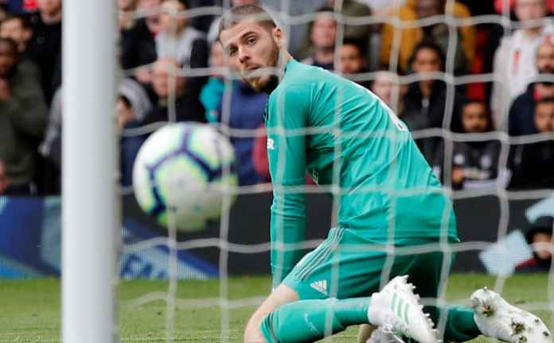

Manchester United akan tumbalkan De Gea di bursa musim panas
Manchester United Akan Tumbalkan De Gea di bursa transfer musim panas. Klub kaya itu perlu tambahan dana segar. Baca selanjutnya di Selengkapnya
Liga Utama Inggris atau Liga Premier Inggris adalah liga tertinggi dalam sistem liga sepak bola di Inggris. Kompetisi ini diikuti oleh 20 klub, liga ini menerapkan sistem promosi dan degradasi dengan English Football League
Manchester United Akan Tumbalkan De Gea di bursa transfer musim panas. Klub kaya itu perlu tambahan dana segar. Baca selanjutnya di Selengkapnya
Jose Mourinho komentari tuntutan sadis FA pada pemain klub Liga Inggris Tottenham Hotspur polesannya, Dele Alli. Jose Mourinho dilaporkan The Times of India telah mengomentari tuntutan sadis yang dilontarkan pihak FA kepada Dele Alli. Pihak FA telah menyeret sang pemain ke meja hijau atas postingan berbau sara Alli soal virus Corona alias Covid-19 beberapa waktu yang lalu. Baca selanjutnya di Selengkapnya
Eks Manchester United, Garry Neville menilai striker Arsenal, Pierre Emerick Aubameyang sangat pantas di puji selangit dan sudah selevel dengan sang legenda klub, Thierry Henry. Aubameyang sendiri di daratkan petinggi The Gunners sejak awal musim 2018 lalu dari Borussia Dortmund. Dimana hadirnya sang pemain diharapkan bisa menjadi juru gedor yang tajam. Hasilnya pada musim perdananya ia berhasil mencetak 10 gol di kompetisi Liga Inggris. Baca selanjutnya di Selengkapnya


| Club | Manager | Nationality |
|---|---|---|
| Bournemouth | Eddie Howe | England |
| Arsenal | Mikel Arteta | Spain |
| Aston Villa | Dean Smith | England |
| Brighton and Hove Albion | Graham Potter | England |
| Burnley | Sean Dyche | England |
| Crystal Palace | Roy Hodgson | England |
| Everton | Carlo Anceloti | Italy |
| Leicester City | Brendan Rogers | Northern Ireland |
| Liverpool | Jurgen Klopp | Germany |
| Manchester City | Josep Guardiola | Spain |
| Manchester United | Ole Gunnar Solskjaer | Norway |
| Newcastle United | Steve Bruce | England |
| Norwich City | Daniel Farke | Germany |
| Norwich City | Daniel Farke | Germany |
| Sheffield United | Chris Wilder | England |
| Southampton | Ralph Hassenhutl | Austria |
| Tottenham Hotspur | Jose Mourinho | Portugal |
| Watford | Nigel Pearson | England |
| West Ham United | David Moyes | Scotland |
| Wolverhampton Wanderers | Nuno Espirito Santo | Portugal |